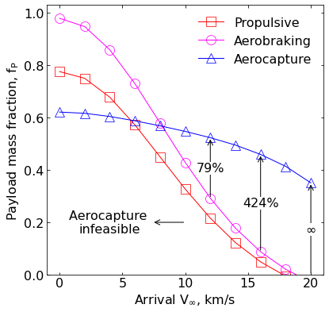

16 - Mass-Benefit Analysis - Neptune¶
[1]:
import numpy as np
import matplotlib.pyplot as plt
from matplotlib import rcParams
from AMAT.planet import Planet
[2]:
planet = Planet("NEPTUNE")
[3]:
ISP = 320.0
g0 = 9.80665
peri_alt_km = 4000.0
apoa_alt_km_pp = 400000.0
apoa_alt_km_ab = 5248815.88
[4]:
energy_pp = -planet.GM / ((planet.RP+apoa_alt_km_pp*1E3 + peri_alt_km*1E3 + planet.RP))
energy_ab = -planet.GM / ((planet.RP+apoa_alt_km_ab*1E3 + peri_alt_km*1E3 + planet.RP))
v_peri_orb_pp = np.sqrt(2*energy_pp + 2*planet.GM/(peri_alt_km*1E3+planet.RP))
v_peri_orb_ab = np.sqrt(2*energy_ab + 2*planet.GM/(peri_alt_km*1E3+planet.RP))
[5]:
def compute_v_arrival(vinf):
return np.sqrt(vinf**2 + (2.0*planet.GM)/(peri_alt_km*1E3+planet.RP))
[6]:
def compute_DV(vinf):
v_arrival = compute_v_arr(vinf)
DV_pp = v_arr - v_peri_orb_pp
DV_ab = v_arr - v_peri_orb_ab
return DV_pp, DV_ab
[7]:
def compute_fP_prop_pp(vinf_array):
v_arrival_arr = compute_v_arrival(vinf_array)
DV_arr = v_arrival_arr - v_peri_orb_pp
return 1 - 1.12*(1.0 - np.exp(-DV_arr/(ISP*g0)))
[8]:
def compute_fP_prop_ab(vinf_array):
v_arrival_arr = compute_v_arrival(vinf_array)
DV_arr = v_arrival_arr - v_peri_orb_ab
return 1 - 1.12*(1.0 - np.exp(-DV_arr/(ISP*g0)))
[9]:
vinf_array = np.linspace(0.0, 20.0E3, 11)
[11]:
fP_prop_pp = compute_fP_prop_pp(vinf_array)
fP_prop_ab = compute_fP_prop_ab(vinf_array)
Q_array = np.array([52.86E3, 56.12E3, 65.05E3, 78.26E3, 94.96E3,
115.3E3, 140.7E3, 173.5E3, 219.8E3, 286.7E3,
393.0E3])
tps_mf_array = 0.091*np.power(Q_array, 0.51575)/100.0
ess_mf = 0.23
fP_aero = 1.0 - ess_mf - tps_mf_array*0.60
fig = plt.figure()
fig.set_size_inches([6.25,6.25])
rcParams['font.family'] = 'sans-serif'
rcParams['font.sans-serif'] = ['DejaVu Sans']
params = {'mathtext.default': 'regular' }
plt.rcParams.update(params)
plt.plot(vinf_array/1.0E3, fP_prop_pp, linestyle='-', linewidth=1.00, marker='s',ms=12, markerfacecolor="None", markeredgecolor='red', markeredgewidth=0.75, color='red', label='Propulsive')
plt.plot(vinf_array/1.0E3, fP_prop_ab, linestyle='-', linewidth=1.00, marker='o',ms=12, markerfacecolor="None", markeredgecolor='magenta', markeredgewidth=0.75, color='magenta', label='Aerobraking')
plt.plot(vinf_array/1.0E3, fP_aero, linestyle='-', linewidth=1.00, marker='^',ms=12, markerfacecolor="None", markeredgecolor='blue', markeredgewidth=0.75, color='blue', label='Aerocapture')
plt.xlabel("Arrival "+r'$V_\infty$'+r', km/s' ,fontsize=16)
plt.ylabel('Payload mass fraction, '+r'$f_P$' ,fontsize=16)
ax = plt.gca()
ax.tick_params(direction='in')
ax.yaxis.set_ticks_position('both')
ax.xaxis.set_ticks_position('both')
plt.legend(loc='upper right', fontsize=16, frameon=False)
ax.set_ylim(0,1.03)
plt.xticks(np.linspace(0,20, 5, endpoint=True), fontsize=16)
plt.yticks(fontsize=16)
ax.set_ylim(0,1.03)
ax.annotate('Aerocapture \ninfeasible',
xy=(10, 0.2) ,
xytext=(4, 0.2),
arrowprops=dict(arrowstyle="<-"), va="center", ha="center", fontsize=16)
ax.annotate('',
xy=(vinf_array[6]/1.0E3, fP_prop_ab[6]) ,
xytext=(vinf_array[6]/1.0E3, fP_aero[6]),
arrowprops=dict(arrowstyle="<-"), va="center", ha="center", fontsize=16)
plt.text(vinf_array[6]/1.0E3, 0.5*(fP_prop_ab[6]+fP_aero[6]),
str(int((fP_aero[6] - fP_prop_ab[6])*100/fP_prop_ab[6]))+'%' ,
fontsize=16, ha='center', va='center',
bbox=dict(facecolor='white', edgecolor='white', pad=0.0))
ax.annotate('',
xy=(vinf_array[8]/1.0E3, fP_prop_ab[8]) ,
xytext=(vinf_array[8]/1.0E3, fP_aero[8]),
arrowprops=dict(arrowstyle="<-"), va="center", ha="center", fontsize=16)
plt.text(vinf_array[8]/1.0E3, 0.5*(fP_prop_ab[8]+fP_aero[8]),
str(int((fP_aero[8] - fP_prop_ab[8])*100/fP_prop_ab[8]))+'%' ,
fontsize=16, ha='center', va='center',
bbox=dict(facecolor='white', edgecolor='white', pad=0.0))
ax.annotate('',
xy=(vinf_array[10]/1.0E3, 0.0) ,
xytext=(vinf_array[10]/1.0E3, fP_aero[10]),
arrowprops=dict(arrowstyle="<-"), va="center", ha="center", fontsize=16)
plt.text(vinf_array[10]/1.0E3, 0.5*(0.0+fP_aero[10]),
r'$\infty$' ,
fontsize=16, ha='center', va='center',
bbox=dict(facecolor='white', edgecolor='white', pad=0.0))
plt.savefig('../data/jsr-paper/neptune/neptune-mb.png', dpi= 300,bbox_inches='tight')
plt.savefig('../data/jsr-paper/neptune/neptune-mb.pdf', dpi=300,bbox_inches='tight')
plt.savefig('../data/jsr-paper/neptune/neptune-mb.eps', dpi=300,bbox_inches='tight')
plt.show()
